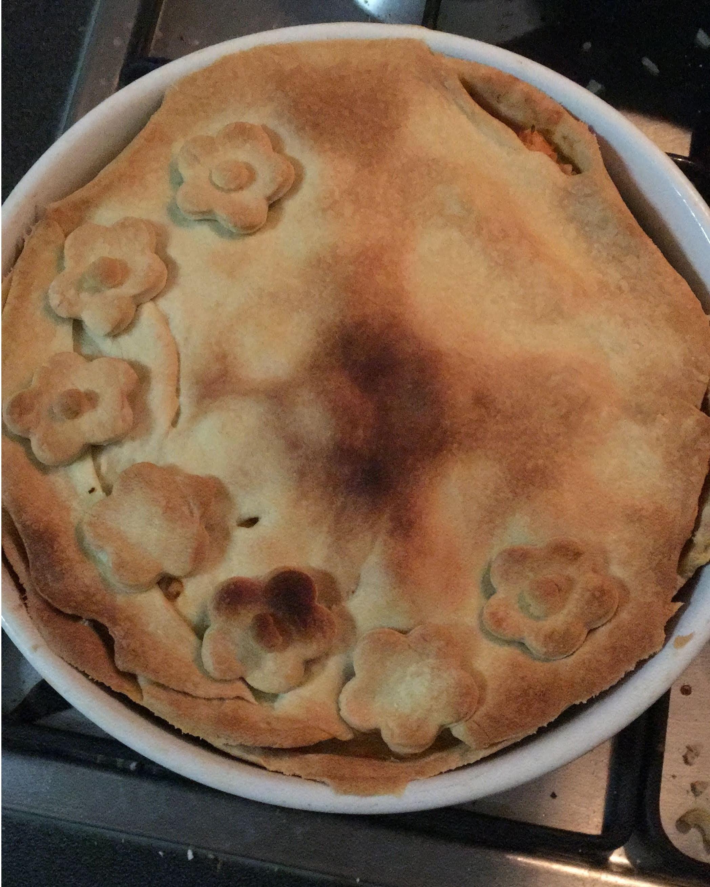

Massa de torta com azeite

Ingredientes
- 240 g de farinha de trigo
- 1 1/2 colher (chá) de sal
- 90 ml de azeite
- 180 ml de água
Modo de preparo
- Misturar a farinha e o sal, adicionar o azeite e esfarelar com a ponta dos dedos até obter uma farofa.
- Acrescentar a água aos poucos, misturando até obter uma massa macia e que descole das mãos.
Observações
- Durabilidade: 2 dias em refrigeração antes de assar.
- Receita da Eduk.